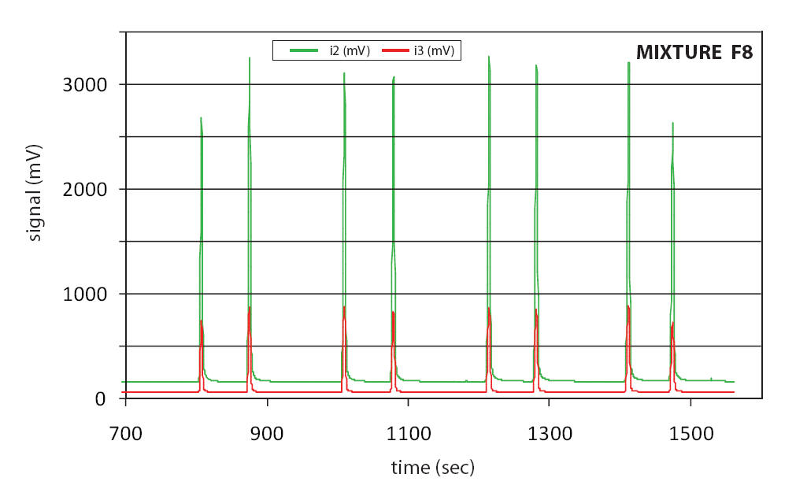

Fatty Acid Esters
Information on Fatty Acid Esters
Available fatty acid esters span from decanoic acid methyl ester (10:0) to tricontanoic acid methyl ester (30:0) and include several ethyl, n-propyl, and n-butyl esters, as well as a triglyceride. A few icosanoic (or eicosanoic) acid methyl esters are available in larger amounts to serve as joint GC and EA reference materials for 2-point isotopic calibrations. Some esters feature 2H and 13C-enrichment, either in the alcohol group or in the fatty acid chain.
Download a complete list of available esters
Guidance
Individual fatty acid esters
Individual fatty acid esters are useful in cases when n-alkanes would co-elute with analytes following co-injection. Decanoic acid methyl ester is dissolved in hexane and sealed under argon in brown glass ampoules (~1 mg C-10 FAME in 0.5 milliliter hexane per ampoule).
Most other fatty acid esters are available pure in 5 mg amounts in crimp-sealed glass vials or in sealed glass capillaries. A few of the 2H and 13C-enriched esters are dissolved as mixtures F8-2 in cyclohexane or F8-4 hexane and sealed under argon in brown glass ampoules.
Chromatogram of F8 Mixtures
{kind=link}
Mixtures of fatty acid esters
Mixtures of fatty acid esters dissolved in hexane or cyclohexane are suitable for establishing the precision and accuracy of a GC-IRMS instrument in a similar fashion as with the n-alkane mixtures. In contrast to the n-alkane mixtures, the δ2H values of participating n-alkanoic acid esters are chosen to minimize the isotopic differences among some of the sequentially eluting peaks. This precaution helps reduce the effect of isotopic peak-to-peak memory (Wang and Sessions, 2009, Memory effects in compound-specific 2H/1H analysis by gas chromatography/pyrolysis/isotope-ratio mass spectrometry. Analytical Chemistry 80, 9162-9170. https://doi.org/10.1021/ac801170v) and results in a more accurate isotopic calibration.
Mixture F8-2 contains eight n-alkanoic acid esters at concentrations of approx. 0.1 mg per milliliter for each ester in cyclohexane. Mixture F8-4 is more concentrated and contains the same eight n-alkanoic acid esters at concentrations of approx. 1.5 mg per milliliter for each ester in hexane. Both mixtures feature esters with compound-specific δ2H values spanning from -166.7 to -231.2 ‰ vs. VSMOW (for details, see the list using the link shown above). A chromatogram of mixtures of type F8 is shown below. A 5 % phenyl GC column (DB-5 equivalent) is the typical and durable choice for separating fatty acid esters. Some other columns give better separation of unsaturated esters, but they are more polar, have shorter lifetimes, and lower temperature limits which translates into longer runs.
Why is there no Safety Data Sheet (SDS) for the n-alkanoic acid ester mixtures?
It is unpractical to issue a single SDS for the solvent and the 8 individual dissolved n-alkanoic acid esters. The solvents hexane or cyclohexane constitute more than 99 wt. % of each mixture. From a practical point of view, the SDS of the solvent is the single most relevant SDS. The dissolved n-alkanoic acid ester components are present in negligible concentrations and represent non-hazardous oily or waxy, inert compounds.